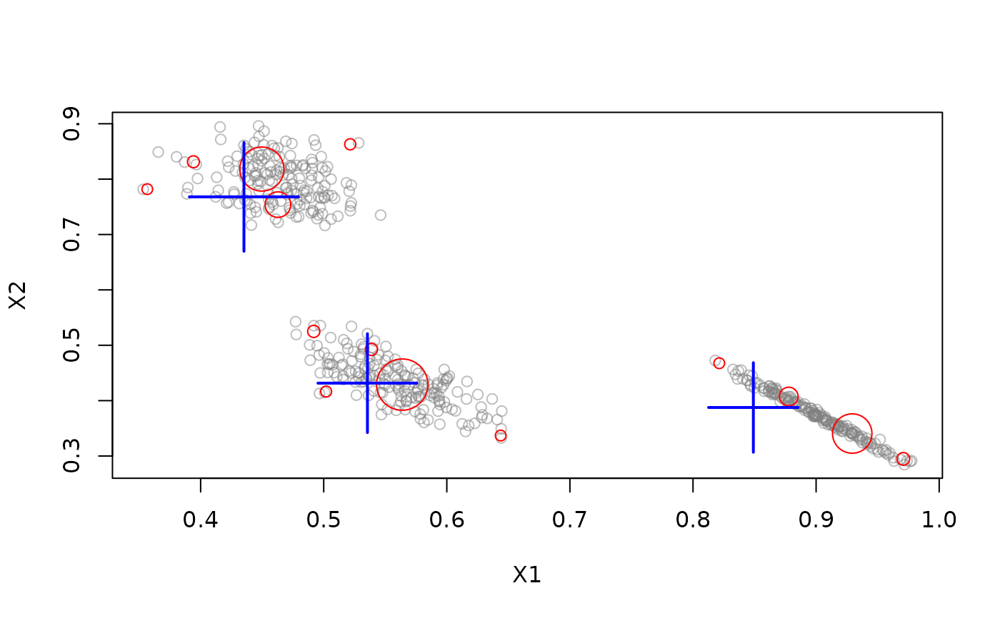

Micro Clusterer with reclustering. Stream clustering algorithm based on evolutionary optimization.
Usage
DSC_evoStream(
formula = NULL,
r,
lambda = 0.001,
tgap = 100,
k = 2,
crossoverRate = 0.8,
mutationRate = 0.001,
populationSize = 100,
initializeAfter = 2 * k,
incrementalGenerations = 1,
reclusterGenerations = 1000
)Arguments
- formula
NULLto use all features in the stream or a model formula of the form~ X1 + X2to specify the features used for clustering. Only.,+and-are currently supported in the formula.- r
radius threshold for micro-cluster assignment
- lambda
decay rate
- tgap
time-interval between outlier detection and clean-up
- k
number of macro-clusters
- crossoverRate
cross-over rate for the evolutionary algorithm
- mutationRate
mutation rate for the evolutionary algorithm
- populationSize
number of solutions that the evolutionary algorithm maintains
- initializeAfter
number of micro-cluster required for the initialization of the evolutionary algorithm.
- incrementalGenerations
number of EA generations performed after each observation
- reclusterGenerations
number of EA generations performed during reclustering
Details
The online component uses a simplified version of DBSTREAM to
generate micro-clusters. The micro-clusters are then incrementally
reclustered using an evolutionary algorithm. Evolutionary algorithms create
slight variations by combining and randomly modifying existing solutions. By
iteratively selecting better solutions, an evolutionary pressure is created
which improves the clustering over time. Since the evolutionary algorithm is
incremental, it is possible to apply it between observations, e.g. in the
idle time of the stream. Whenever there is idle time, we can call the
recluster() function of the reference class to improve the
macro-clusters (see example). The evolutionary algorithm can also be applied
as a traditional reclustering step, or a combination of both. In addition,
this implementation also allows users to evaluate a fixed number of generations
after each observation.
References
Carnein M. and Trautmann H. (2018), "evoStream - Evolutionary Stream Clustering Utilizing Idle Times", Big Data Research.
See also
Other DSC_Micro:
DSC_BICO(),
DSC_BIRCH(),
DSC_DBSTREAM(),
DSC_DStream(),
DSC_Micro(),
DSC_Sample(),
DSC_Window()
Other DSC_TwoStage:
DSC_DBSTREAM(),
DSC_DStream(),
DSC_TwoStage()
Author
Matthias Carnein Matthias.Carnein@uni-muenster.de
Examples
stream <- DSD_Gaussians(k = 3, d = 2) %>% DSD_Memory(n = 500)
## init evoStream
evoStream <- DSC_evoStream(r = 0.05, k = 3,
incrementalGenerations = 1, reclusterGenerations = 500)
## insert observations
update(evoStream, stream, n = 500)
## micro clusters
get_centers(evoStream, type = "micro")
#> X1 X2
#> 1 0.4497456 0.8181533
#> 2 0.5637947 0.4289740
#> 3 0.9293563 0.3406117
#> 4 0.4918870 0.5250702
#> 5 0.3566712 0.7819043
#> 6 0.4628310 0.7539940
#> 7 0.8777946 0.4074685
#> 8 0.9708400 0.2948889
#> 9 0.3941394 0.8313449
#> 10 0.5215463 0.8629049
#> 11 0.5387252 0.4924837
#> 12 0.6437782 0.3370284
#> 13 0.5019915 0.4164743
#> 14 0.8213341 0.4675900
## micro weights
get_weights(evoStream, type = "micro")
#> [1] 158.883349 192.782371 136.970352 8.769363 1.599124 71.465199
#> [7] 39.052095 11.138849 7.641257 3.766000 8.710939 1.939926
#> [13] 2.965643 1.977980
## macro clusters
get_centers(evoStream, type = "macro")
#> X1 X2
#> 1 0.4351887 0.7680192
#> 2 0.8490315 0.3876597
#> 3 0.5355163 0.4316070
## macro weights
get_weights(evoStream, type = "macro")
#> [1] 243.3549 189.1393 215.1682
## plot result
reset_stream(stream)
plot(evoStream, stream)

## if we have time, then we can evaluate additional generations.
## This can be called at any time, also between observations.
## by default, 1 generation is evaluated after each observation and
## 1000 generations during reclustering but we set it here to 500
evoStream$RObj$recluster(500)
## plot improved result
reset_stream(stream)
plot(evoStream, stream)
## get assignment of micro to macro clusters
microToMacro(evoStream)
#> [1] 1 3 2 3 1 1 2 2 1 1 3 3 3 2